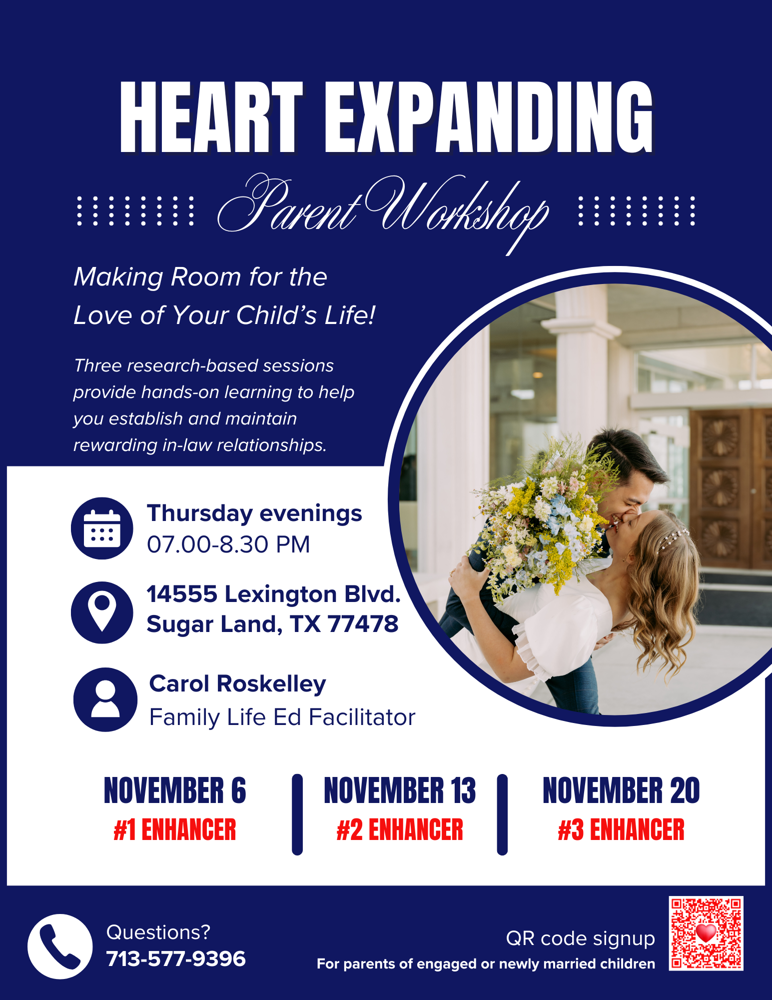
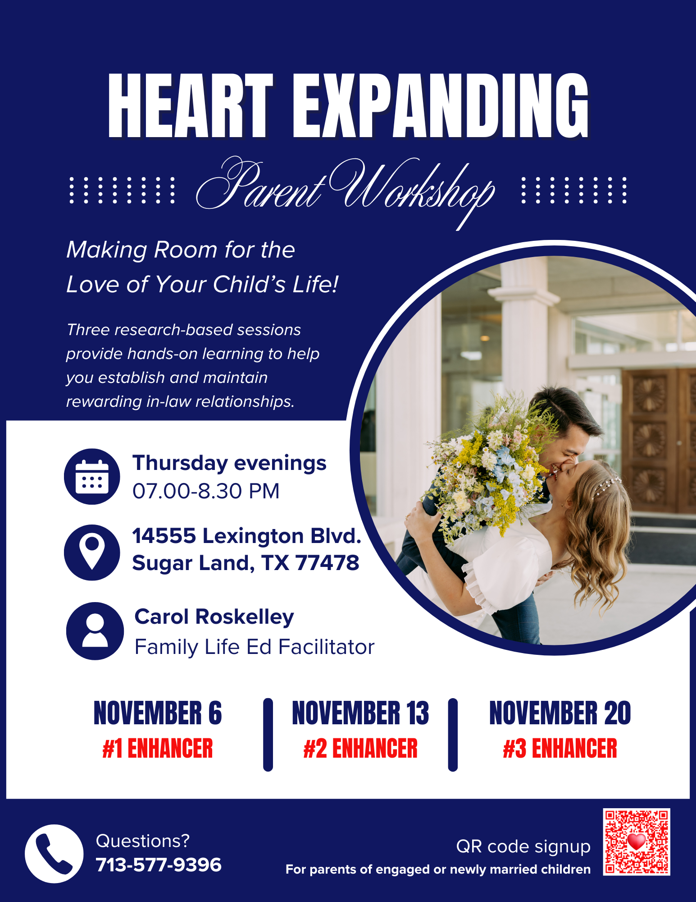

Sugar Land 2nd Ward
Sacrament Meeting
November 9th

Sacrament Meeting
November 9th
Presiding: Bishop Cody Roskelley
Conducting: Brother Jared Draney
Our ministry is a ministry of all the children of God on the face of the earth. We pray for all. We seek to serve all. And we invoke the blessings of the Lord Jesus Christ upon all who seek to serve Him, to do so in worthiness and commitment and optimism. We do not have the answers to all the world’s problems. They have not been revealed. But what we do know is that we are all children of heavenly parents, and that we are called to serve all of the children of God.
- President Dallin H. Oaks
The sister missionaries have a new phone number: 346-901-8717
Volleyball Wednesdays - Come join us on Wednesdays at 9PM and have fun!!!
Send announcements to bvl2clerk@gmail.com

 

08 November 2025 Bradford, R&G; Chen, A&T; Clark, A&K, Crandall, B&K, Crosby, D
15 November 2025 Davidson, M&M; Debow, D; Debow, D&R, Draney, J&M, Ekstrom, J, Ocampo F
22 November 2025 Griffin, J&V, M; Harrington, N&S; Hettinger, J&L, Horowitz, T, Jeffery, D&R
Check link section for how-to-videos
Book a tithing declaration interview
See the entire building cleaning schedule
See how to service soap dispensers
See how to refill paper towel dispensers
See how to replace toilet paper rolls
Get started with Temple and Family History work
Sign up to feed the missionaries